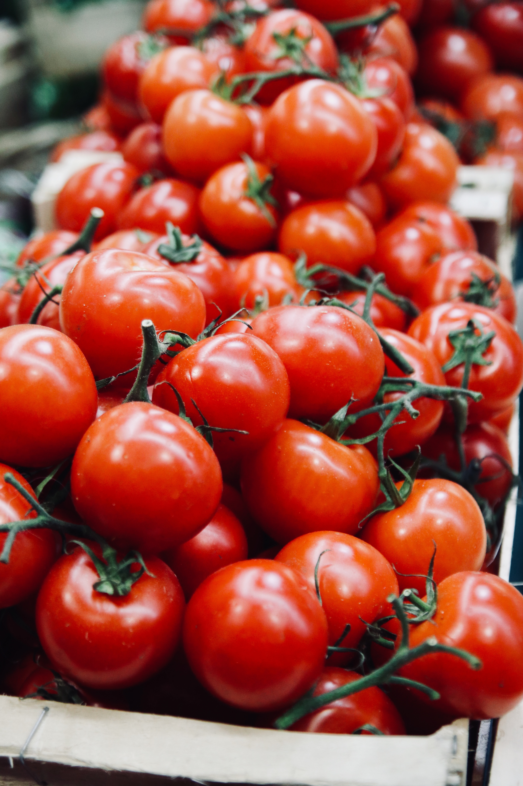

hiccup
「生活習慣」と言いますと？
あれこれ振り返り
そして続けよう
食事
！！！
"just a little hiccup in our usual wonderful service"

まずは、適量を計算。
身長 (cm) ← 半角数字で入力して下さい！例：164.5
１日の活動量は？
活動量(20)：デスクワーク
活動量(25)：立ち歩きあり
活動量(30)：重いものを運ぶ
あなたの１日の適度な摂取カロリーと主食量は？
計算する
アルコールの適量は？
肝臓がオーバーワークにならない
純アルコール量は１日２０ｇ
まで！
計算方法 ： アルコール（％）× 飲酒量 ×100ml × 比重0.8
例） ストロング系アルコール９％のロング缶500mlでは？
→→→ ９（％）× ５（00ml) × 0.8 = 36(g)
つまり、たった１本の酎ハイが、適量の1.8倍なのです。
次の日は休肝日にして、２日に１回、肝臓にも働き方改革を！